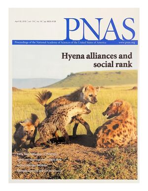

Social alliances improve rank and fitness in convention-based societies
Strauss, E.D. & Holekamp, K.E. (2019). Proceedings of the National Academy of Sciences, 116(18), 8919–8924. doi.org/10.1073/pnas.1810384116
In many animal societies, including those of spotted hyenas and numerous primates, dominance rank is determined not by fighting ability but by social convention, with offspring inheriting positions adjacent to their mothers. Such arrangements pose an evolutionary puzzle: if rank determines access to resources and reproduction, why do subordinate individuals acquiesce to an arbitrary position rather than contest it? Drawing on decades of behavioral data spanning multiple generations of wild hyenas, we show that individuals who repeatedly form coalitions with their closest allies tend to rise above their expected rank, that these improvements carry measurable reproductive benefits, and that the resulting differences between adjacent matrilines are amplified across generations by rank inheritance. Cooperation therefore provides a route to social mobility even where hierarchy appears fixed by convention, and the compounding of small advantages over generations offers a general mechanism by which durable inequality emerges in animal and human societies alike.